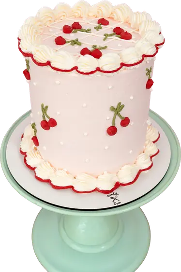
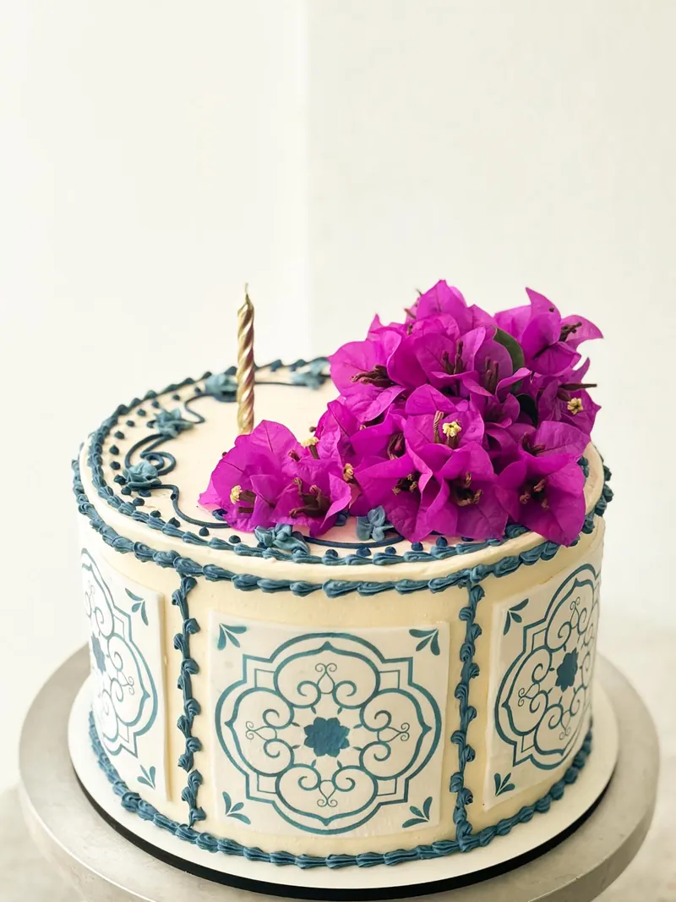
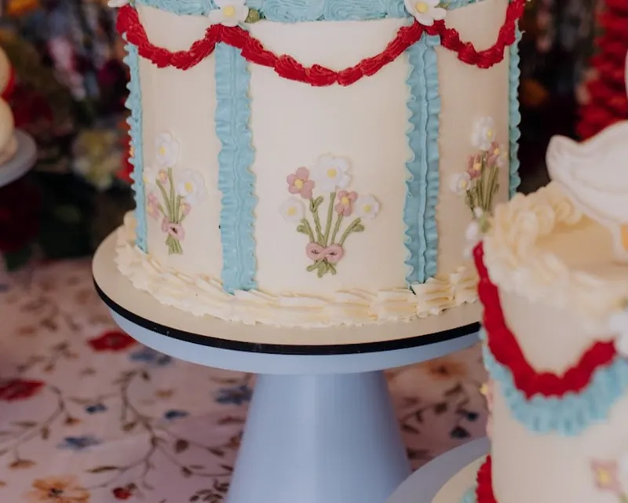
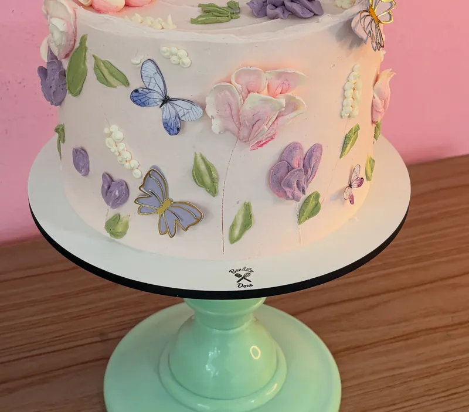
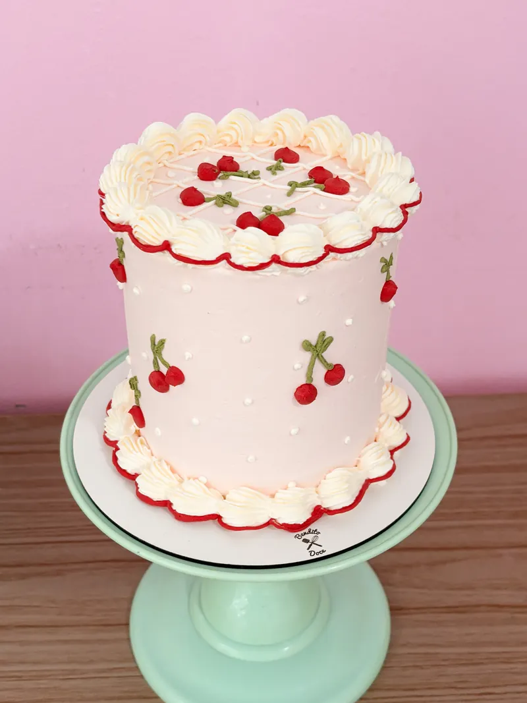
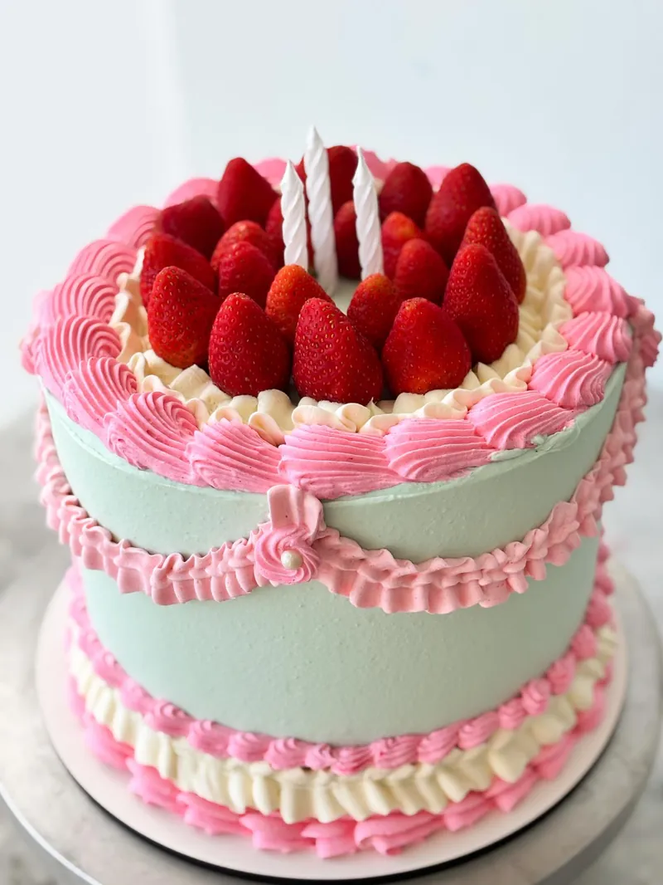
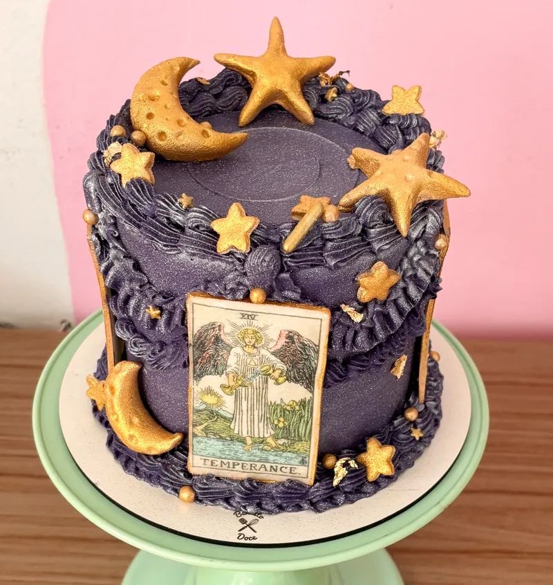
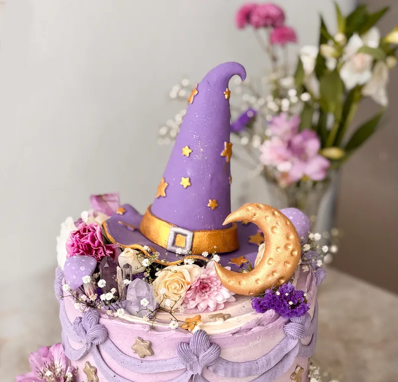
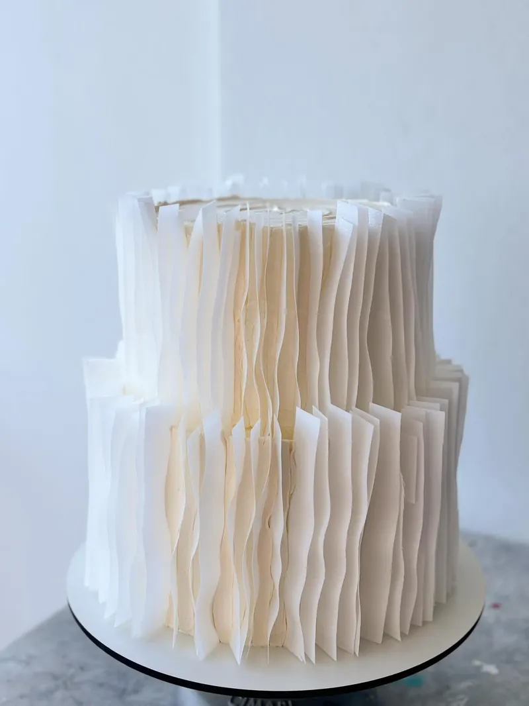
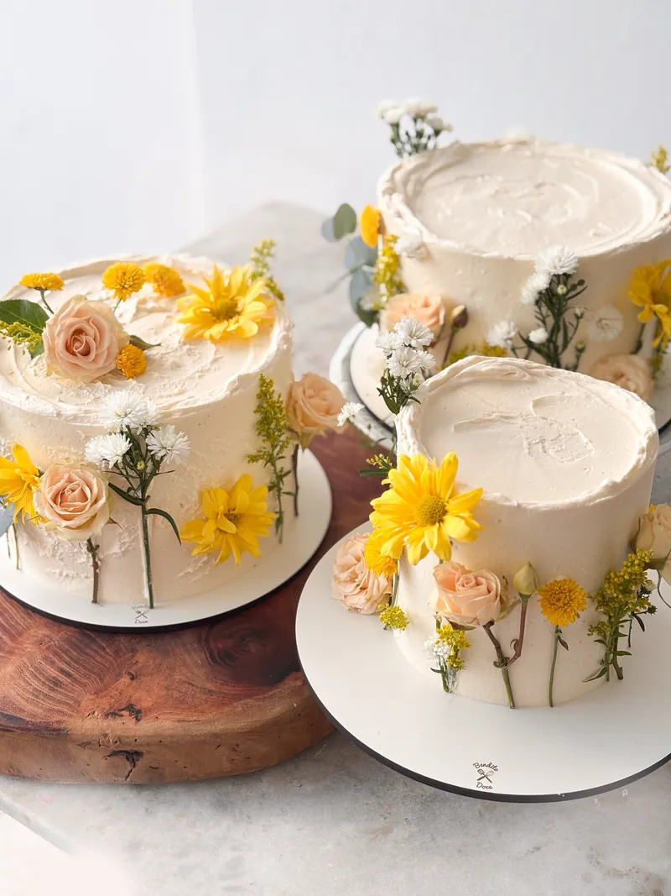

Escolha pela cor.
Estes bolos são exemplos. O seu é feito com a cor e o tema que você pedir.

 Bendito Doce
Bendito Doce
Estes bolos são exemplos. O seu é feito com a cor e o tema que você pedir.










